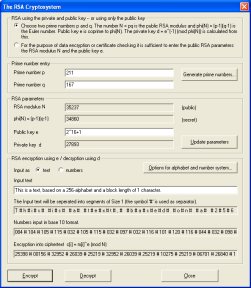
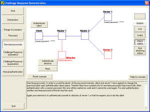
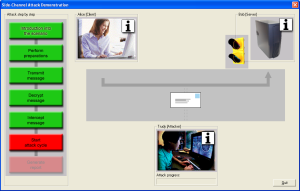
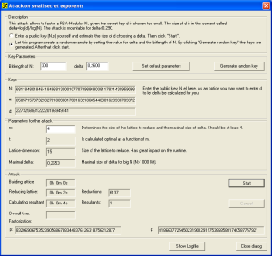

Demonstration and Reference Program for Cryptography and Cryptanalysis
What is CrypTool?
Interactive Demonstrations / Visualizations
Online Help, Documentation and Tutorials
Roadmap (Plans for Future Releases)
Release of the Source Code / Terms of the Licence / Non-Liability
What is CrypTool?
CrypTool is a freeware program which enables you to apply and analyze cryptographic mechanisms. It has the typical look-and-feel of a modern Windows application.
CrypTool contains exhaustive online help, which can be understood without extensive knowledge of cryptography.
CrypTool is available in English, German and Polish. CrypTool has implemented almost all state-of-the-art crypto functions and allows you to learn about and use, cryptography within the same environment.
The methods available include both classic methods and modern cryptosystems:
- classic methods: e.g. the Caesar cipher, the ADFGVX cipher, the double-column transposition (permutation) and the Enigma encryption algorithm.
- modern methods: e.g. the RSA and AES algorithms, hybrid encryption and algorithms based on lattice reduction and elliptic curves.
Many Screenshots can be found below and in the included CrypTool presentation.
If you encrypt a document the result will be shown in a new sub-window: The title of the resulting window contains both the name of the original document and the encryption key used. The usage of keys is supported by two special icons: Clicking the icon "Show key"  allows you to store a copy of the key used from a resulting window into an internal storage. If you then encrypt another document with the same encryption method the icon "Insert key"
allows you to store a copy of the key used from a resulting window into an internal storage. If you then encrypt another document with the same encryption method the icon "Insert key"  is active within the key entry dialog box. This is helpful, especially with more complex keys.
is active within the key entry dialog box. This is helpful, especially with more complex keys.
Automatic analysis tools for obtaining the key, starting from a knowledge of the encrypted document and any additional information (the unencrypted document or the language of the document), are provided for the classic encryption algorithms. For additional information on automatic analysis, within CrypTool go to the help screen for the "Analysis" menu and choose the encryption algorithm to be analyzed there.
To support your own analysis of documents, CrypTool can display a histogram of the document, determine the statistics for any N-grams and calculate entropy and autocorrelation.
The encryption functions within the menu "Crypt/Decrypt" are implemented in a way that they can be called upon and performed efficiently.
On the other hand, the functions in the menu "Indiv. Procedures" are implemented in a way that they can be performed step by step and interactively. Here the e-learning aspect is the main focus.
In the menu "Indiv. Procedures" single different methods and protocols are offered.
For example:
- calculate hash values and show their sensitivity.
- create Message Authentication Codes (MACs).
- find out how "strong" keys can be generated from passwords according to the PKCS#5 standard.
- compress and decompress documents. This enables the study of file compression prior to the actual encryption of a given document.
- generate or analyze random numbers.
- demonstrate protocols for authentication und key exchange (DH).
- step through some ciphers forward and backwards (using the animation software ANIMAL).
- apply common encodings like base64 and uuencode.
Which menu items can be selected depends on the type of the active document. The menus and sub-menus of CrypTool are dynamically generated, depending on the opened document's type (binary or text). All menu items are visible all the time, but only the ones which fit to current document type can be selected. The remaining menu items are disabled.
An overview of all menu items (menu tree) within CrypTool can be found in appendix A of the script.
Within CrypTool the modern algorithms are implemented according to international standards.
The authors of CrypTool did not implement cryptographic functionality where good free programs were available on the internet: So e.g. dictionary attacks against password files (see John-the-Ripper) are not part of CrypTool yet.
The RSA Cryptosystem
The RSA cryptosystem (see menu "Indiv. Procedures \ RSA Cryptosystem \ RSA demonstration") is covered comprehensively and implemented for different codings. The RSA key can be generated from prime numbers selected by the user. Key generation, encryption and decryption can be followed step-by-step.
Factorisation of numbers is also an important application for cryptography. Simple RSA cryptosystems can be easily cracked using the factorisation algorithms presented in CrypTool. Thus, you get an idea of the minimum length of keys necessary for secure systems.
Interactive Demonstrations / Visualizations
These interactive demonstrations (visualizations) are helpful for improving the understanding of the following topics:
- creating an electronic signature (menu Digital Signatures/PKI \ Sign Message).
- processing hybrid encryption (menu Crypt/Decrypt \ Hybrid \ RSA-AES Encryption).
- how do modifications to a document change the hash value?
- sensitivity of hash algorithms (menu Indiv. Procedures \ Hash \ Hash Demonstration).
- generation of hash value collisions (birthday paradox) (menu Analysis \ Hash \ Attack on the Hash Value of the Digital Signature).
- Diffie-Hellman key exchange (menu Indiv. Procedures \ Protocols \ Diffie-Hellman Demonstration).
- side-channel attack (menu Analysis \ Asymmetric Encryption \ Side-Channel Attack on "Textbook RSA").
- authentication protocols (menu Indiv. Procedures \ Protocols \ Network Authentication).
- shared secrets using Chinese Remainder Theorem (menu Indiv. Procedures \ Chinese Remainder Theorem Applications \ Secret Sharing by CRT) and Shamir (menu Indiv. Procedures \ Secret Sharing Demonstration (Shamir)).
- visualizations of some algorithms (e.g. Vigenère, AES, Enigma) (menu Indiv. Procedures \ Visualization of Algorithms).
- find out how an ancient number theoretic theorem (Chinese Remainder Theorem) can be applied (e.g. when are the planets of our solar system positioned in one straight line) (menu Indiv. Procedures \ Chinese Remainder Theorem Applications \ Astronomy and Planetary Motion).
- 3D visualization of big sets of random numbers (menu Analysis \ Analyse Randomness \ 3D Visualization).
- computer based training for number theory (menu Indiv. Procedures \ Number Theory - Interactive \ Learning Tool for Number Theory).
- point addition on elliptic curves (menu Indiv. Procedures \ Number Theory - Interactive \ Point Addition on Elliptic Curves).
Besides the interactive demonstrations the CrypTool package contains the educational game "The Number Shark", which trains pupils to calculate factors.
Online help, documentation and tutorials
During the development of CrypTool, much care has been taken to ensure that context sensitive help is available at any point by pressing the F1 key. You can get a fast overview, if you move through the menu items: Just click F1 to see details about any menu item.
The extensive online help
- explains all basic cryptographic terms.
- contains a short list of references.
- provides a historic overview of the development of cryptography within the time-table.
- contains examples (tutorials) making it easy for you to get up to speed.
- has a well sorted index of cryptographic topics.
Besides the online help, CrypTool provides additional documentation:
- The readme file contains all important elements of the CrypTool package, new features of this version and a description of the project and how to install and use CrypTool.
- The CrypTool presentation, with about 100 slides, gives an overview of the CrypTool project and CrypTool's features.
- In the script (provided as a PDF file with about 200 pages) you will find more, mathematically-oriented information about:
- cryptographic methods.
- prime numbers.
- elementary number theory with many examples.
- current results of the cryptanalytic research.
- In the fantasy story "The Dialogue of the Sisters" by Dr. Carsten Elsner two sisters in a psychiatric hospital use a variant of the RSA cryptosystem.
- Within the fantasy story "The Chinese Labyrinth" by Dr. Carsten Elsner, Marco Polo has to solve some number theoretic problems to become a chief advisor of the Great Khan.
In addition to the tutorials in the online help you can call from within CrypTool an Authorware computer based training about elementary number theory.
Screenshots
a) A number of different text analysis procedures are available in CrypTool. These will bring out the weaknesses of simple encryption algorithms, while some of the algorithms can be broken automatically.

b) CrypTool reveals the inner working of digital signatures and hybrid encryption (RSA-AES und ECC-AES) with interactive data flow diagrams.

c) The capabilities of CrypTool are actively supported through the comprehensive help facilities.

d) Thanks to the use of the Secude library, CrypTool offers the possibility of getting to know and test modern encryption algorithms. Brute-force analysis is also available for modern symmetric algorithms.

e) You can examine variants of the RSA algorithm (different key length, different alphabets, different block sizes) using the dialog box "The RSA cryptosystem".

{kind=link}
f) Demonstration of ways to authenticate within the net:
- From UID/PW and one-time password.
- By (unilateral) challenge-response (symmetric + asymmetric).
- To asymmetric mutual authentication.
- The user interactively can control what an attacker can do (take over a computer, connect or disconnect interconnections, eavesdrop).
- Learning objective: only the mutual asymmetric authentication is secure against man-in-the-middle-attacks.

{kind=link}
g) Demonstration of a side-channel attack against a typical hybrid encryption protocol: If the implementation is not correct (as has happened in reality), then the attacker can calculate the session key very efficiently.

{kind=link}
h) Three attacks against the RSA method based on lattice reduction. They all have special pre-conditions:
- One of the factors of N is partly known ("Factorint with a Hint").
- Parts of the cleartext of a captured encrypted message is known and e is small ("Attack on Stereotyped Messages").
- If d is chosen too small compared to N, then you can factorize N ("Attack on small Secret Exponents").

{kind=link}
i) Implementation of MACs (combination of hashes and symmetric encryption to authenticate messages). Hashes are already used in CrypTool within the concepts of PKCS#5 and digital signatures.
j) Three applications based on the Chinese Remainder Theorem:
- Solution of a system of linear modular equations applied to the planets of our solar system.
- Illustrating how you can do calculations with remainders instead of the original numbers.
- Illustrating the shared secret method (this is analogous to needing any three out of 5 key owners to open a vault).
k) Illustrating algorithms (Caesar, Vigenère, Nihilist und DES) using the animation software ANIMAL (Java application: allows one to specify and model the single steps of algorithms or the components of data structures with as much detail as desired, and run these steps forwards, backwards, or automatically). Animations can be created with the Animal system using a GUI, a script language or a Java API.
l) 3D visualisation of big sets of random numbers with the rendering engine from OpenQVis.
m) Implementation and analysis of ADFGVX, for example, as a cascading cipher.
n) Efficient analysis of the monoalphabetic substitution cipher.
o) The NumberShark is a game for pupils which trains them to calculate factors.
p) Flash animations for AES and Enigma.
q) Educational software describing and visualizing elementary number therory.
r) An ECC demo shows how points on an elliptic curve can be added and multiplied in discrete and real fields (written as a Java application).
New in this Version
Please refer to the readme file for a detailed list of new features and bug fixes.
Roadmap (Plans for Future Releases)
The current release version is CrypTool 1.4.10. This version is written in C/C++ and requires a Win32 environment. It has been compiled with the development environment Microsoft Visual Studio 2003.
Version 1.4.10 contains some functions, which call a Java application. To run these functions you need a Java runtime enviroment under Win32 (at least JRE 1.5).
Work planned, in discussion and already started for version 1.4.20:
- Improving the PQM (Illustrating the quality of chosen passwords).
- A demonstration of visual cryptography.
- An implementation of mass pattern search.
- A demonstration of the S/MIME standard for secure e-mail.
- A demonstration of the interoperability between S/MIME and PGP.
- A demonstration of Bleichenbacher's RSA signature forgery.
There are two bigger sub-projects for the future versions of CrypTool and a small sub-project for a Linux port:
a) Complete new design of CrypTool in .Net and C# (CrypTool 2.0):
- This bigger sub-project ports CrypTool to C#, adds new design elements and is based on VS2008, .Net, WPF and the BouncyCastle crypto provider (public beta planned by autumn 2008). It can be compiled with the free Microsoft development environment Visual Studio 2008 Express Edition.
b) Complete new design of CrypTool in Java (JCrypTool):
- This bigger sub-project ports CrypTool to Java, adds new design elements and is based on Eclipse, RCP, SWT and the crypto providers BouncyCastle and FlexiProvider (public beta (= milestone 3) planned by autumn 2008).
c) For Linux:
- Linux port of CrypTool 1.4.x with Qt4 and gcc4.
Organizational
CrypTool was developed jointly by companies and universities to provide an adequate teaching aid. It is also used to raise IT security awareness in programs conducted by corporations and, for the end user, to gain a deeper understanding of the concept of computer security.
Another objective was to help clarify the cryptographic techniques employed in organizations. With CrypTool, as a reliable reference implementation the possibility of checking the cryptographic functionality of other programs exist.
The hash functions, the modern symmetric and the asymmetric encryption algorithms and the key management functions are based on the Secude toolkit developed by Secude IT Security GmbH.
The enclosed Secude library does not support smart cards. If you have a Secude library licence you will be able to use smart cards.
The ECC-AES hybrid encryption is based on the "cv act library" by cryptovision.
In order to demonstrate the RSA cryptosystem and to factorize integers CrypTool uses the long integer arithmetic of the Miracl library from Shamus Software Ltd.
In order to demonstrate the hash collisions (using the birthday paradox) the OpenSSL library libeay32.dll is used.
Victor Shoup's number theoretic library NTL is used to do lattice based RSA attacks.
The GMP library for arbitrary precision arithmetic is used for prime number tests.
CrypTool is hosted by the "IT Security" department of the Technical University of Darmstadt, headed by Professor Claudia Eckert.
The open source developer group headed by Bernhard Esslinger does the maintenance and is the provider of the product. Being the maintainer means to coordinate and execute actively the further development of CrypTool as freeware and open source software. Each maintainer has committed himself to take care that:
- the source code remains consistent.
- competent contact persons are available, should they be needed by other developers.
- the names of the present authors and sponsors are retained in program and source code as in this CrypTool release.
- all new versions are maintained consistently both in English and German.
Release of the Source Code / Terms of the Licence / Non-Liability
The source code can be downloaded from the download section.
Please note the terms of licence and the information regarding non-liability for any damage arising from the use of CrypTool (see download page).
PS:
This page is in most parts identical to the starting page of the CrypTool online help. The online help version additionally contains links to other online help pages.
Bernhard Esslinger -- Copyright © 1998 - 2008 Deutsche Bank AG / Contributors